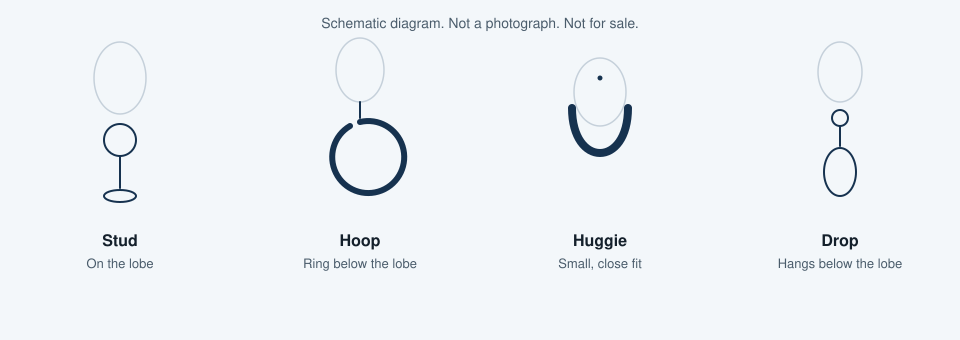
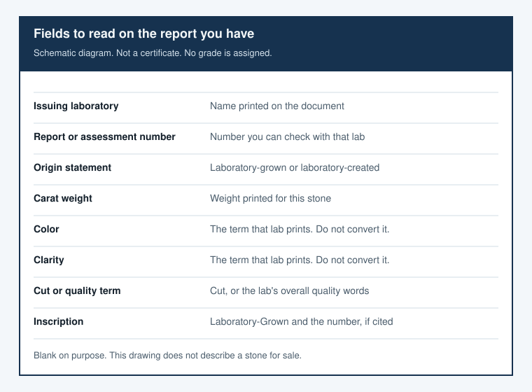

How to Choose Lab-Grown Diamond Earrings (and How They Compare with Natural Diamonds)
This page explains how to choose a pair of laboratory-grown diamond earrings and how those laboratory-grown diamonds compare with natural, mined diamonds. Every stone discussed here as a made-in-a-lab product is a laboratory-grown diamond, also called a laboratory-created diamond.
What lab-grown diamonds are — and how they compare with natural diamonds
Same material, different origin
Natural diamonds formed in the earth over a very long time. Laboratory-grown diamonds are produced in a laboratory, typically by high-pressure, high-temperature growth (HPHT) or by chemical vapor deposition (CVD), usually in weeks rather than geologic time. GIA states the comparison in “Is There a Difference Between Natural and Laboratory-Grown Diamonds?”
Laboratory-grown diamonds have essentially the same chemical, physical, and optical properties as natural diamonds. The difference is origin: natural diamonds formed in the earth; laboratory-grown diamonds are produced in a lab, usually by HPHT or CVD methods. They are diamonds, not glass or cubic zirconia, but they are not mined diamonds. A shopper should look for a clear “laboratory-grown” or “laboratory-created” label and a report from an independent gemological lab. Only specialized laboratory testing, not the naked eye, can reliably separate lab-grown from natural diamonds.
You cannot tell them apart by eye
GIA states that traditional observations and older diamond detectors are not reliable for telling natural diamonds from laboratory-grown diamonds. Identification needs a professional gemological laboratory or purpose-built screening equipment. This site cannot authenticate a stone. If a listing never says laboratory-grown diamond or natural diamond, do not guess the origin from a photo.
Buying tradeoffs, without invented numbers
Visually they can look the same. The practical differences are origin, how they are identified and reported, and typical buying tradeoffs such as retail price and resale, which vary by listing and should be checked at the time of purchase rather than assumed from a single published figure. This page is a buying guide, not a seller, and it does not grade stones or promise investment value.
Laboratory-grown diamonds and natural diamonds are often priced differently. Some buyers still choose natural diamonds for resale. Forbes Vetted’s 2026 article (updated July 22, 2026) discusses a lower typical retail price and weaker resale as a downside of laboratory-grown stones. It names Blue Nile as its overall pick, and Blue Nile’s Round Brilliant Stud Earrings as its top laboratory-grown diamond earrings pick in a related list. That is Forbes’s published landscape, not a ranking by this page. Dollar examples and percentages from that article are not repeated here. Check the current listing for price.
Not the same as simulants
Moissanite and cubic zirconia are different materials, sold as lookalikes. They are not laboratory-grown diamonds and they are not natural diamonds. The listing and the report should say laboratory-grown or laboratory-created when that is the stone, and should name moissanite or cubic zirconia when that is the stone. This page gives no optical or hardness figures for those other materials. Read the material line.
How to choose lab-grown diamond earrings
Start with the earring style you will actually wear (studs, hoops, huggies, or drops). Then read the grading or quality report that comes with each stone, including carat, color, clarity, and cut as that lab presents them, and confirm the pair is matched. Check the metal, setting, and earring back, and confirm the retailer’s return and warranty terms on the product page. Look for a “Laboratory-Grown” inscription or an equivalent report statement so the origin is clear.
Start with the style of earring

Studs sit on the earlobe. A hoop may hold one laboratory-grown diamond or a row; the listing should say each stone is a laboratory-grown diamond. Huggies are small hoops close to the lobe. Drops hang below it. Buy the style you will wear.
A matched pair agrees on carat weight, cut, color, and clarity as the reports print them, and the listing shows both stones. This page sets no numeric tolerance. One report for two stones is incomplete until the retailer identifies the second laboratory-grown diamond. This site cannot confirm a match from a photo.
Read the report you actually have

Read carat, color, clarity, and cut as printed on the document with the listing. GIA and IGI are the independent laboratories you will see most often. Forbes Vetted notes that IGI is widely used for laboratory-grown stones, and some retailers also mention GCAL. Naming them is not a ranking and not a grade from this site.
GIA’s current laboratory-grown diamond service is an overall quality assessment, in a format distinct from its report for natural diamonds. The girdle is laser inscribed “Laboratory-Grown” and the assessment number, per GIA’s services page. Labels changed from broader categories in 2019, to the 4Cs, then to Premium / Standard, announced August 26, 2025 and effective October 1, 2025, from an overall look at clarity, color, and cut. Do not assume D-to-Z letters or VVS and VS abbreviations. An older GIA report, or an IGI report, may still print them. Read the document you have. This page assigns no grade.
See a layout, with the laboratory named, on GIA’s sample laboratory-grown diamond services page and on IGI’s page for reading its laboratory-grown diamond report. A sample is not your pair. On the listing, check laboratory name, report number, origin, carat for each laboratory-grown diamond, color as printed, clarity as printed, cut or that laboratory’s quality words, and any inscription. If the two numbers differ, ask the retailer.
Setting, metal, and backs

Prongs leave more of the laboratory-grown diamond visible and can snag. A bezel covers the edge. For a halo, the listing should say whether each smaller stone is a laboratory-grown diamond, a natural diamond, or another material. One “laboratory-grown” in the title does not settle the halo.
14k gold, 18k gold, and platinum are listing categories, not metals this site sells. Karat is a gold mark. If the listing says white gold, check whether it mentions rhodium plating. A push back can loosen. A screw back threads on. Hoops and drops may use a lever or a hinge. Read the post and the back if skin reactions matter. Return, warranty, and tightening terms stay on the retailer page. This preview states none of them.
A short pre-purchase checklist
- The report is present, and its number matches the listing.
- “Laboratory-grown,” or an equivalent origin line, is clear on the report and, if an inscription is cited, on the stone.
- The pair matches on carat weight, cut, color, and clarity as the reports state them.
- Metal, setting, and back type are stated, including the post or wire if that metal matters.
- The return window, and any warranty you care about, is on the retailer page.
- Any side stone is named as a laboratory-grown diamond, a natural diamond, or another material.
- The current listing is open for the price. This page does not quote one.
Where to shop (placeholder referrals only)
The names are examples from the Forbes Vetted 2026 roundup or the public program check of 2026-11-12, in that order, not as a score. This site does not sell the earrings.
Blue Nile
Official program page: bluenile.com/affiliates. Commission rate: not found. Approved markets: not published. The public Impact page showed an application entrance and no rate.
[Affiliate link — placeholder; not enrolled / commission not found]
Brilliant Earth
Official page: brilliantearth.com/affiliates/. Copied sentence, retrieved 2026-11-12 10:06–10:08 Asia/Shanghai, not a commission this site has earned:
“Competitive Commission Payouts - 5% Loose Diamonds, Gemstones, Engagement Rings, Wedding Bands, 7% Fine Jewelry Purchases”
The same page also states a 30 Day Cookie Window On All Online Sales and a per-order commission cap, paid via the Impact Platform monthly, less returns, shipping, and tax. Approved markets: not separately listed. Not a commission this site has earned.
[Affiliate link — placeholder; not enrolled / commission not found]
Ritani
Official page: ritani.com/earn-with-ritani. Copied from that page, retrieved 2026-11-12 10:06–10:08 Asia/Shanghai: commission is 2% (Percent Of Sale), Payout Automatic. Approved-market wording on the page: “Available for US customers only”. Not a commission this site has earned.
[Affiliate link — placeholder; not enrolled / commission not found]
With Clarity
The brand page and the Awin program page do not state the same ceiling. Both sentences are copied in full. Retrieved 2026-11-12 10:06–10:08 Asia/Shanghai. Neither is a commission this site has earned.
Brand page, withclarity.com/pages/affiliates:
“Earn up to 8% commission on all diamond jewelry sold up to 45 days of referral link.”
Awin official program page, ui.awin.com/merchant-profile/89517:
“Earn up to 11% commission on all diamond jewelry sold up to 45 days after the referral link.”
The Awin page also lists Attribution Period (Cookie Length) as 45 Days. Approved markets: not published on either page.
[Affiliate link — placeholder; not enrolled / commission not found]
Plum Diamonds
Official page: plumdiamonds.com/pages/affilate-partnership. It says “competitive commission rates” and names ShopMy. No specific figure. Commission rate: not found. Approved markets: not published.
[Affiliate link — placeholder; not enrolled / commission not found]
Dorsey
Awin program page: Dorsey Affiliate Program. Attribution Period (Cookie Length): 7 Days. Commission rate: not found. Approved markets: not published.
[Affiliate link — placeholder; not enrolled / commission not found]
Stone and Strand
Awin program page: STONE AND STRAND Affiliate Program. Attribution Period (Cookie Length): 30 Days. Commission rate: not found. Approved markets: not published.
[Affiliate link — placeholder; not enrolled / commission not found]
Mejuri
No public terms page was found. Mejuri’s contact page lists press@mejuri.com. That is a contact, not a rate. Fine Crew’s 10% off a customer’s first order is a discount, not an affiliate commission. Commission rate: not found.
[Affiliate link — placeholder; not enrolled / commission not found]
Grown Brilliance
Public terms did not open. A footer link pointed at Impact. Commission rate: not found. Approved markets: not found.
[Affiliate link — placeholder; not enrolled / commission not found]
Aurate
No official plan page was found. Commission rate: not found. Approved markets: not found.
[Affiliate link — placeholder; not enrolled / commission not found]
Required disclosures
Laboratory-grown qualifier. Under the FTC Jewelry Guides, 16 CFR Part 23, an unqualified “diamond” is a problem when the stone is not mined. Use laboratory-grown or laboratory-created where a shopper can see it. “Cultured” is not enough on its own unless it is clearly qualified as laboratory-grown or laboratory-created. This page uses those qualifiers when it calls these stones diamonds. Natural diamonds are called natural or mined.
Material connection. Under the FTC Endorsement Guides, 16 CFR Part 255, a material connection has to be clear near the top and near the links. A footer-only note is not enough. Both disclosure boxes on this draft say the same thing: names are examples, this site is not an enrolled affiliate, and any rate sentence is copied from an official page. It is not money this site has earned. This site is not a certified seller and does not issue a grading conclusion.
FAQ
Are lab-grown diamond earrings “real” diamonds?
Laboratory-grown diamonds have essentially the same chemical, physical, and optical properties as natural diamonds. The difference is origin: natural diamonds formed in the earth; laboratory-grown diamonds are produced in a lab, usually by HPHT or CVD methods. They are diamonds, not glass or cubic zirconia, but they are not mined diamonds. A shopper should look for a clear “laboratory-grown” or “laboratory-created” label and a report from an independent gemological lab. Only specialized laboratory testing, not the naked eye, can reliably separate lab-grown from natural diamonds.
How should I choose a pair?
Start with the earring style you will actually wear (studs, hoops, huggies, or drops). Then read the grading or quality report that comes with each stone, including carat, color, clarity, and cut as that lab presents them, and confirm the pair is matched. Check the metal, setting, and earring back, and confirm the retailer’s return and warranty terms on the product page. Look for a “Laboratory-Grown” inscription or an equivalent report statement so the origin is clear.
How do they compare with natural diamond earrings?
Visually they can look the same. The practical differences are origin, how they are identified and reported, and typical buying tradeoffs such as retail price and resale, which vary by listing and should be checked at the time of purchase rather than assumed from a single published figure. This page is a buying guide, not a seller, and it does not grade stones or promise investment value.
What is this page’s relationship to the retailers it names?
This page is a draft preview. Names are examples. We are not an enrolled affiliate for these links. Slots are placeholders. A copied commission sentence is not a commission this site has earned. Where no rate was published, the entry says not found. This site does not sell the earrings and does not grade them.
Related guides
No other article is published with this preview. Later topics, with no addresses yet:
- A later laboratory-grown diamond versus moissanite explainer
- A stud-backing care note